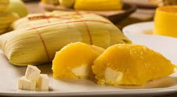

Receita de Pamonha

Ingredientes
- 15 espigas de milho
- 500 ML de leite de coco
- 1 copo raso de açucar
- 1 colher de chá de sal
Modo de preparo
Rale o milho.
Misture o leite, o açucar e o sal.
Coloque na palha e leve ao fogo com água até cobrir; deixe por 50 minutos.
Cololque em uma peneira para escorrer a água durante 20 minutos.